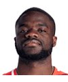

意大利
· 单打Singles
返回排名Back to rankings →
马蒂亚·贝鲁奇Mattia Bellucci
28–252026 胜负2026 W–L
0生涯冠军Career titles
292–191生涯胜负Career W–L
60.5%生涯胜率Career win rate
10低级别冠军Lower-tier titles
No.63最高排名Career high
分赛季战绩Record by season
| 赛季Season | 场次Matches | 胜W | 负L | 胜率Win % |
|---|---|---|---|---|
| 2026 | 53 | 28 | 25 | 52.8% |
| 2025 | 55 | 24 | 31 | 43.6% |
| 2024 | 84 | 51 | 33 | 60.7% |
| 2023 | 73 | 38 | 35 | 52.1% |
| 2022 | 89 | 66 | 23 | 74.2% |
| 2021 | 57 | 39 | 18 | 68.4% |
| 2020 | 21 | 15 | 6 | 71.4% |
| 2019 | 39 | 24 | 15 | 61.5% |
| 2018 | 12 | 7 | 5 | 58.3% |
生涯场地战绩Career record by surface
胜负 / 胜率W–L / win rate硬地Hard158–8864.2%
红土Clay63–5055.8%
草地Grass22–1756.4%
室内Indoors49–3657.6%
冠军记录Titles by season
主巡回赛冠军main-tour titles20250
20230
20220
20210
对现役前 30 的交手战绩Record against the current top 30
已收录赛果stored results泰勒·弗里茨Taylor FritzUSANo.100–2卢西亚诺·达德里Luciano DarderiItalyNo.200–2亚历杭德罗·达维多维奇·福基纳Fokina Alejandro DavidovichSpainNo.292–0

弗朗西斯·蒂亚弗Frances TiafoeUSANo.80–1雅库布·门斯克Jakub MensikCzech RepublicNo.150–1布兰登·中岛Brandon NakashimaUSANo.160–1卡斯珀·鲁德Casper RuudNorwayNo.170–1亚历山大·巴伯里克Alexander BublikKazakhstanNo.211–0托马斯·马丁·埃切韦里Tomas Martin EtcheverryArgentinaNo.301–0